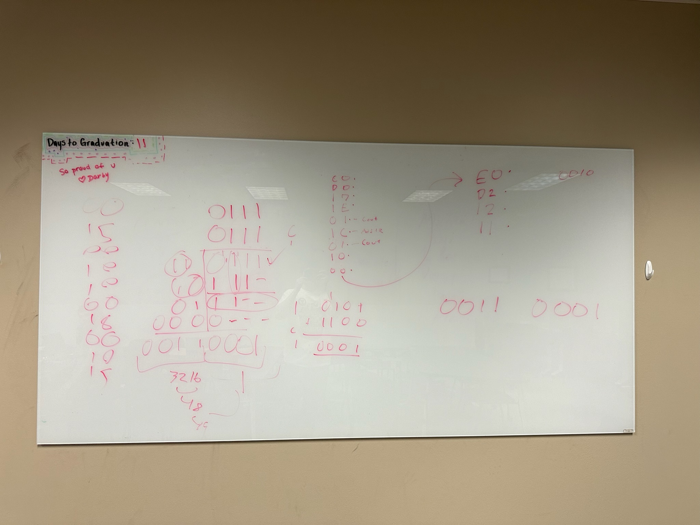

Table of Contents
My Website!
Welcome to my page! My name is Kaleb Badgett. I am a student at Texas Tech University majoring in Computer Engineering.
Through my time at Tech, I have learned many things such as, how to use Verilog, C++, Python (basic understanding), building breadboard circuits using combinational and sequential logic,
and most important of all, how to learn! As I learn more, and undergo more projects, I will update this page with the results.
My time at Tech has been very educational and I am very excited to put what I learn here to use in the workplace.
Feel free to check out my projects below!
The Crown Jewels
CPU Project
The project I am most proud of is my final project from my Modern Digital Systems class with Professor Derek Johnston. The goal of this project was to create a fully function CPU using breadboards and different digital logic devices. My group
and I faced many challenges, such as malfunctioning breadboards and faulty wiring, while completing this project, but the
end result was exactly what we wanted. We were able to build a fully functional CPU that is comprised of a acting ROM in
the form of an Arduino, registers, multiplexers, hex inverters, programmable logic devices, and an AND gate. Our CPU
functions just as a normal CPU would, only it is on a smaller scale. It is a 4-bit CPU that has 2 registers and can preform
4 opperations: addition, subtraction, exclusive OR, and move.
Below, you will find pictures displaying our CPU and some of our work regarding our machine code as well as some videos of the CPU in action!
In addition to this, if you would like to view the project report my team put together as well as some examples of our arduino code, you can download the PDF here → Project Report.
First, Let's Look as the CPU Diagram
This hardware diagram shows the different components of the CPU and how they all interact with each other.

Second, Take a Look at the CPU
The CPU is comprised of two multiplexers and two hex inverters on the top two boards. The next chips on the board are the two programmable logic devices, or PLDs. Directly below those are the two registers. To their left is an AND gate and one final hex inverter.

Next, Let's Look at Some of Our Machine Code Calculations
Below, you will see three photos of machine code and binary multiplication calculations. We used this data to complete our multiplication algorithm that was then put into the arduino.



Now for the Demonstration
Below, you will find a video that observes the CPU as it runs through a multiplication algorithm.
Next, Take a Look at the XOR Function in Action
An exclusive OR, or XOR, function is one in which if the inputs are the same, the output is zero, and if the inputs are different, the output is one. View this for yourself in the as the CPU preforms this function!
This Final Video Was For Fun More Than Anything Else
In this video, we changed our clock cycle from 1 second to 1 millisecond. This causes our CPU to run almost too fast to see. Even in the slomotion capture toward the end of the video, the calculation occurs extremely quickly.
This was a very fun and educational project that I'm glad I was able to undertake. If you would like to access the full report, you can do so here.
My First Video Game!
Next on my list of projects is my very own "build your own adventure" game called Defending Nallapas. In this Science Fiction based game, you will make a series of choices that will have an affect on your future.
In this prompt based games, you will be presented with many choices and every coice you make will have an effect moving forward. It may be something as simple as who you talk to, How you react to a situation, or even the words you choose to use but it will have an effect all the same. Will you be the hero who saves the galaxy? Or will you be the villain bent on domination? It is all up to you in Defending Nallapas! Are you ready to venture where no man has gone before?
Defending Nallapas in Action
Once you download the required files from my GitHub page, you'll want to find the setup.exe file and open it.

Once setup.exe is open, you will be presented with a setup wizard. Just follow the instructions to download the game!

*Make sure to save the file in a location where you can find it so that you can locate the application file easily! You may want to save the application file to your desktop for easier access.
Once the game is launched, you'll be met with the following screen.
From here you can start the game!
This game was built using C++. With 970 lines of code and 15 seperate endings, every choice you make carries weight!
If you are interested in my game, follow the link here to access my GitHub and download it for yourself! Make sure to read the README file listed on the GitHub page as it will give you download instructions.
If you have any feedback for improvements, feel free to email me at kabadget@ttu.edu.
Hardware Projects
Arduino related hardware projects
Traffic Light Controller
In this project, I designed a working traffic light controller that was timed using an arduino. The project report can be found here.
7 Segment Display Binary Counter
In this project, I had to design a binary counter that went from 0-9 and displayed the output on a 7 segment display. The project report can be found here.
Voltage Measurement Device Using LEDs
In this project, I had to create a device that could measure the voltage output of a potentiometer from 0-100%. The project report can be found here.
Voltage Measurement Device Using a Servo Motor
The goal of this project was to create a device that could measure the voltage output of a potentiometer from 0-5 volts and display it using a servo motor. The project report can be found here.
Other Hardware Projects
While I do not have pictures or videos of all them, I have also built these:
- A traffic light controller using sequential logic made with D-Flip Flops.
- An adder using AND, OR, and NOT gates.

- An adder using a programmable logic device (PLD).

C++ Programming Projects
Traffic Lights Using an Arduino
- In my first programming project, I completed models a simple RC circuit. It takes in user inputs for time and calculates current and voltage based off that. You can find the project report with code included here.
- The second project was to create a program that could solve the quadratic formula. It takes user inputs for a, b, and c and a series of if else statements that control the output depending on how the inputs influence the equation. You can find the project report with code included here.
- My third programming project was to create a program that used for loops to complete Gottfried Wilhelm von Leibniz's formula for ℼ. You can find the project report with code included here.
- The fourth programming project was to use loops and switches to preform different calculations on complex numbers. You can find the project report with code included here.
- My fifth project was to create different user defined functions that would preform different actions on a 1-D array. Some of these actions include finding the largest and smallest values, finding the mean, finding the median, and finding the mode. You can find the project report with code included here.
- Programming Project 6 was to create a program that could convert numbers from hexadecimal to decimal and from decimal to hexadecimal. In this project, I had to create loops and such that could convert the string value of the hex numbers to usable integers and compare ASCII values to complete the conversion process. You can find the project report with code included here.
- In the seventh programming project, I had to create twi .txt files. One would contain a sorted list of randomly generated numbers and the other contained a histogram of the results. You can find the project report with code and .txt outputs included here.
- The eighth project was to create a series of for loops to complete a Gaussian Elimination based on coefficient values given by the user. You can find the project report with code included here.
- Programming Project 9 was to create a program that could encode and decode different messages based on ASCII values and output the new messages in .txt values. This was completed by using switch case functions and for loops. You can find the project report with code included here.
- The tenth and final programming project was to use classes, overloaded operators, and object oriented programming to complete different operations on complex numbers. You can find the project report with code included here.
Email me at kabadget@ttu.edu.